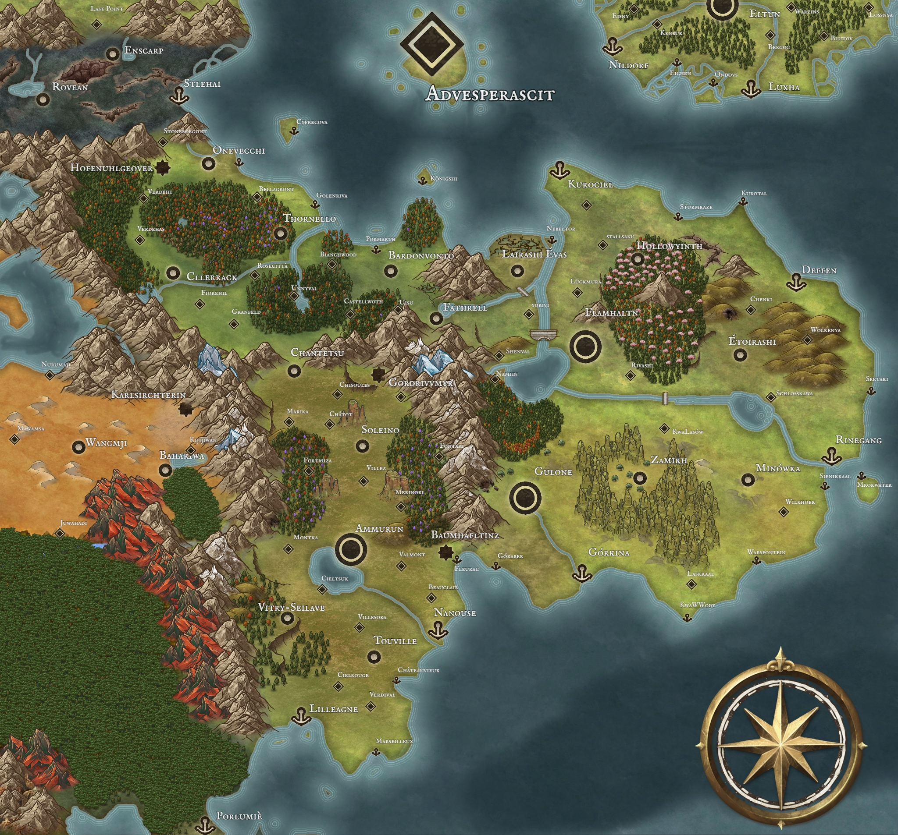
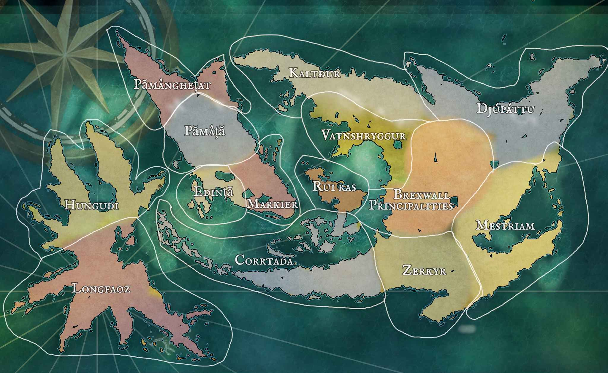

tags:
- HubHomepage



Games
- Misc:
- PBP Travespoir
- Curse of Strahd
- Curse of Strahd 0
- TFN
- Eberron EU
- The Drunken Lords
- Panic! at the Dojo
- ICON
- Above the Miasma
- Ended Game 1
- Ended Game 2
- Eberron
- Kingmaker
- 20MM Campaign 125?-1258
- Advesperascit Campaign 1258-12??
- Across the Pale Campaign ? - 1264
- Freilands Campaign Venrach 2, 1263 - ?, 1264
- Undead Campaign 1263 (after Freilands group's souls got split) - 1265
- Oneshot 1
- Oneshot 2
- Oneshot 3
- Where Eternity Took Root Campaign - 1290ish